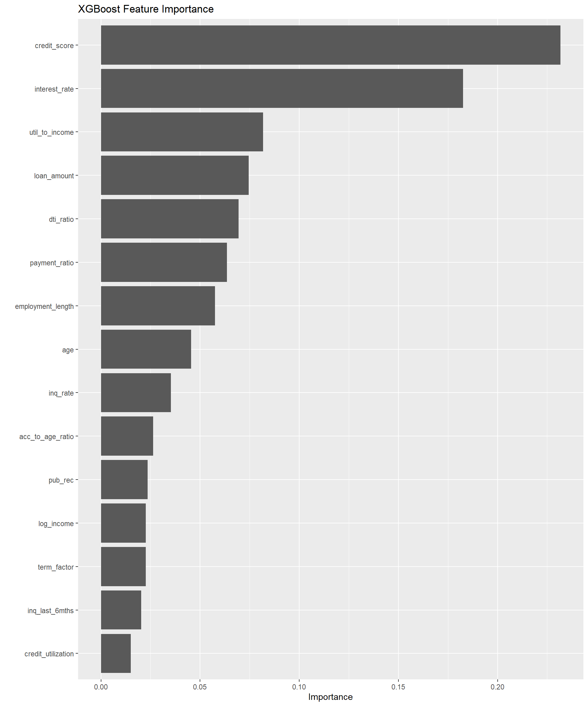
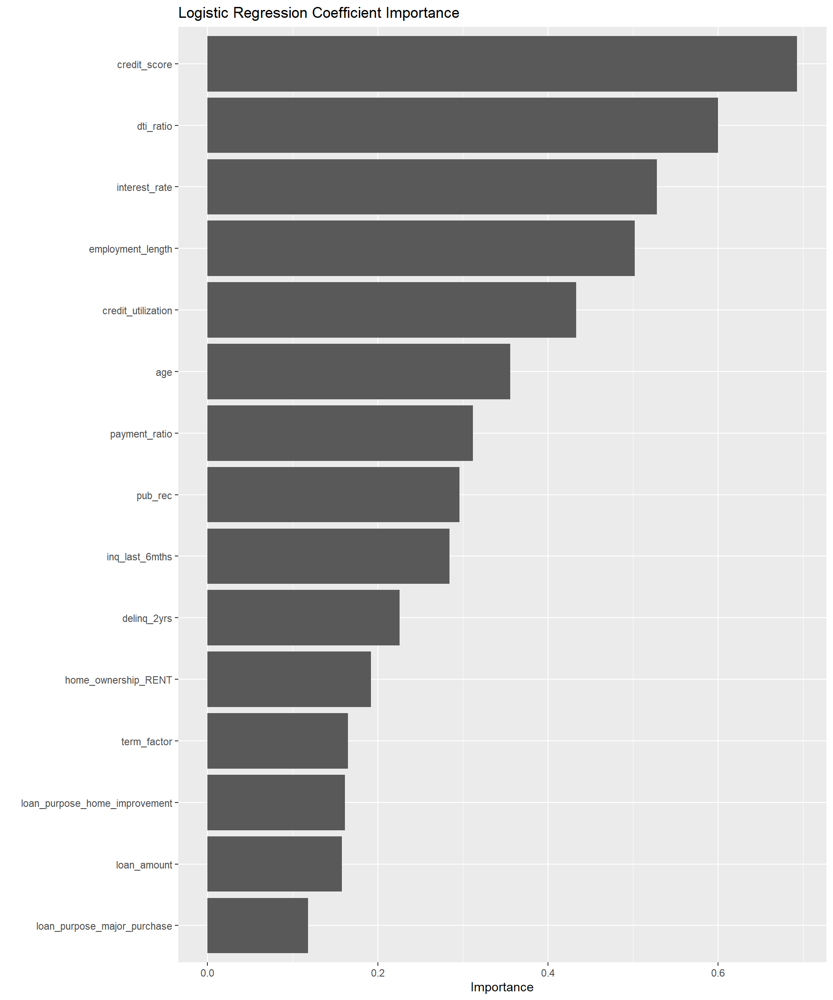
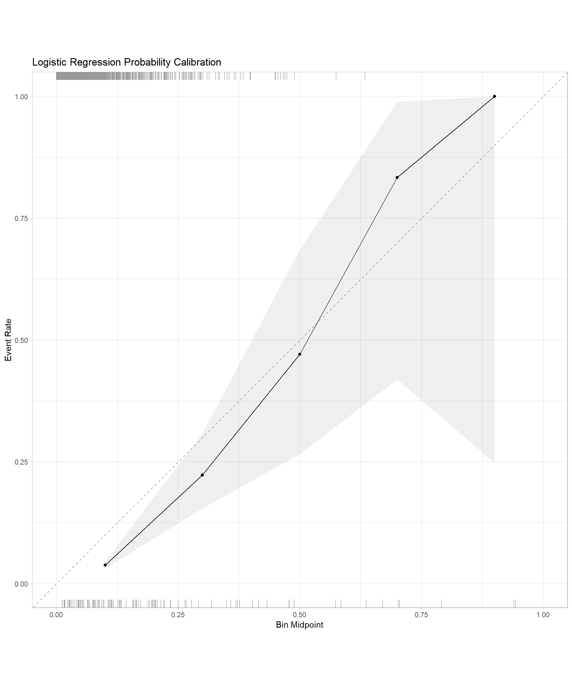
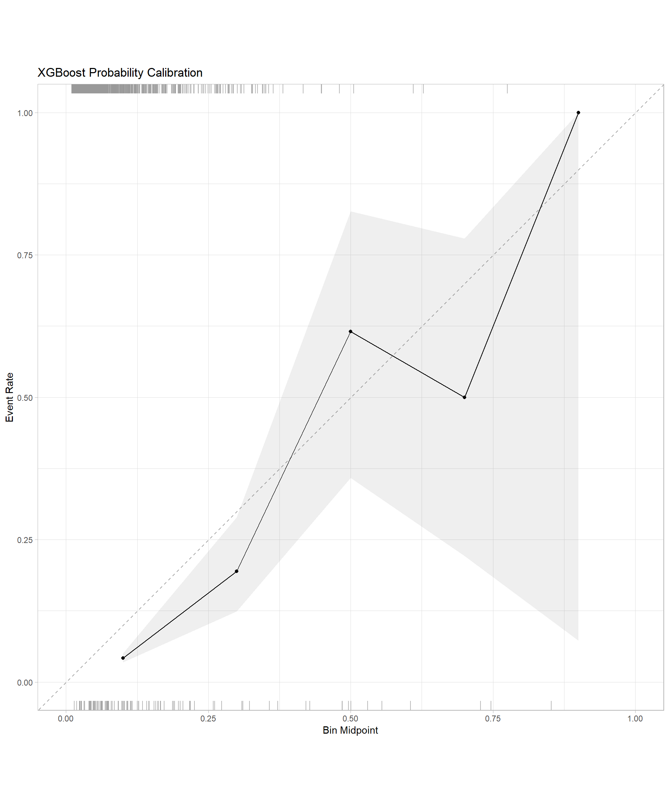
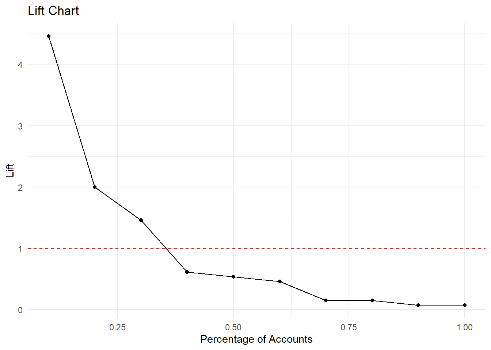

library(tidymodels)
library(xgboost)
library(vip) # For variable importance
library(stringr) # For string manipulation functions
library(probably) # For calibration plots
library(ROSE) # For imbalanced data visualization
library(corrplot) # For correlation visualizationBuilding Models in R with tidymodels
R
Machine Learning
tidymodels
The tidymodels framework provides a cohesive set of packages for modeling and machine learning in R, following tidyverse principles. In this post, we’ll build a realistic credit scoring model using tidymodels.
Credit scoring models are used by financial institutions to assess the creditworthiness of borrowers. These models predict the probability of default (failure to repay a loan) based on borrower characteristics and loan attributes. A good credit scoring model should effectively discriminate between high-risk and low-risk borrowers, be well-calibrated, and provide interpretable insights.
Required Packages
First, let’s load all the required packages for our analysis:
Synthetic Data Generation
This tutorial uses a simulated credit dataset incorporating realistic variable distributions commonly encountered in credit scoring applications. The synthetic data includes demographic information, loan characteristics, and credit history variables with appropriate statistical relationships.
set.seed(123)
n <- 10000 # Larger sample size for more realistic modeling
# Create base features with realistic distributions
data <- tibble(
customer_id = paste0("CUS", formatC(1:n, width = 6, format = "d", flag = "0")),
# Demographics - with realistic age distribution for credit applicants
age = pmax(18, pmin(80, round(rnorm(n, 38, 13)))),
income = pmax(12000, round(rlnorm(n, log(52000), 0.8))),
employment_length = pmax(0, round(rexp(n, 1/6))), # Exponential distribution for job tenure
home_ownership = sample(c("RENT", "MORTGAGE", "OWN"), n, replace = TRUE, prob = c(0.45, 0.40, 0.15)),
# Loan characteristics - with more realistic correlations
loan_amount = round(rlnorm(n, log(15000), 0.7) / 100) * 100, # Log-normal for loan amounts
loan_term = sample(c(36, 60, 120), n, replace = TRUE, prob = c(0.6, 0.3, 0.1)),
# Credit history - with more realistic distributions
credit_score = round(pmin(850, pmax(300, rnorm(n, 700, 90)))),
dti_ratio = pmax(0, pmin(65, rlnorm(n, log(20), 0.4))), # Debt-to-income ratio
delinq_2yrs = rpois(n, 0.4), # Number of delinquencies in past 2 years
inq_last_6mths = rpois(n, 0.7), # Number of inquiries in last 6 months
open_acc = pmax(1, round(rnorm(n, 10, 4))), # Number of open accounts
pub_rec = rbinom(n, 2, 0.06), # Number of public records
revol_util = pmin(100, pmax(0, rnorm(n, 40, 20))), # Revolving utilization
total_acc = pmax(open_acc, open_acc + round(rnorm(n, 8, 6))) # Total accounts
)
# Add realistic correlations between variables
data <- data %>%
mutate(
# Interest rate depends on credit score and loan term
interest_rate = 25 - (credit_score - 300) * (15/550) +
ifelse(loan_term == 36, -1, ifelse(loan_term == 60, 0, 1.5)) +
rnorm(n, 0, 1.5),
# Loan purpose with realistic probabilities
loan_purpose = sample(
c("debt_consolidation", "credit_card", "home_improvement", "major_purchase", "medical", "other"),
n, replace = TRUE,
prob = c(0.45, 0.25, 0.10, 0.08, 0.07, 0.05)
),
# Add some derived features that have predictive power
payment_amount = (loan_amount * (interest_rate/100/12) * (1 + interest_rate/100/12)^loan_term) /
((1 + interest_rate/100/12)^loan_term - 1),
payment_to_income_ratio = (payment_amount * 12) / income
)
# Create a more realistic default probability model with non-linear effects
logit_default <- with(data, {
-4.5 + # Base intercept for ~10% default rate
-0.03 * (age - 18) + # Age effect (stronger for younger borrowers)
-0.2 * log(income/10000) + # Log-transformed income effect
-0.08 * employment_length + # Employment length effect
ifelse(home_ownership == "OWN", -0.7, ifelse(home_ownership == "MORTGAGE", -0.3, 0)) + # Home ownership
0.3 * log(loan_amount/1000) + # Log-transformed loan amount
ifelse(loan_term == 36, 0, ifelse(loan_term == 60, 0.4, 0.8)) + # Loan term
0.15 * interest_rate + # Interest rate effect
ifelse(loan_purpose == "debt_consolidation", 0.5,
ifelse(loan_purpose == "credit_card", 0.4,
ifelse(loan_purpose == "medical", 0.6, 0))) + # Loan purpose
-0.01 * (credit_score - 300) + # Credit score (stronger effect at lower scores)
0.06 * dti_ratio + # DTI ratio effect
0.4 * delinq_2yrs + # Delinquencies effect (stronger effect for first delinquency)
0.3 * inq_last_6mths + # Inquiries effect
-0.1 * log(open_acc + 1) + # Open accounts (log-transformed)
0.8 * pub_rec + # Public records (strong effect)
0.02 * revol_util + # Revolving utilization
1.2 * payment_to_income_ratio + # Payment to income ratio (strong effect)
rnorm(n, 0, 0.8) # Add some noise for realistic variation
})
# Generate default flag with realistic default rate
prob_default <- plogis(logit_default)
data$default <- factor(rbinom(n, 1, prob_default), levels = c(0, 1), labels = c("no", "yes"))
# Check class distribution
table(data$default)
no yes
9425 575 prop.table(table(data$default))
no yes
0.9425 0.0575 # Visualize the default rate
ggplot(data, aes(x = default, fill = default)) +
geom_bar(aes(y = ..prop.., group = 1)) +
scale_y_continuous(labels = scales::percent) +
labs(title = "Class Distribution in Credit Dataset",
y = "Percentage") +
theme_minimal()# Visualize the relationship between key variables and default rate
ggplot(data, aes(x = credit_score, y = as.numeric(default) - 1)) +
geom_smooth(method = "loess") +
labs(title = "Default Rate by Credit Score",
x = "Credit Score", y = "Default Probability") +
theme_minimal()# Examine correlation between numeric predictors
credit_cors <- data %>%
select(age, income, employment_length, loan_amount, interest_rate,
credit_score, dti_ratio, delinq_2yrs, revol_util, payment_to_income_ratio) %>%
cor()
corrplot(credit_cors, method = "circle", type = "upper",
tl.col = "black", tl.srt = 45, tl.cex = 0.7)Stratified Partitioning
Credit default datasets typically exhibit class imbalance, with default events representing the minority class. We implement stratified sampling to preserve the class distribution across training, validation, and test partitions.
# Create initial train/test split (80/20)
set.seed(456)
initial_split <- initial_split(data, prop = 0.8, strata = default)
train_data <- training(initial_split)
test_data <- testing(initial_split)
# Create validation set from training data (75% train, 25% validation)
set.seed(789)
validation_split <- initial_split(train_data, prop = 0.75, strata = default)
# Check class imbalance in training data
train_class_counts <- table(training(validation_split)$default)
train_class_props <- prop.table(train_class_counts)
cat("Training data class distribution:\n")Training data class distribution:print(train_class_counts)
no yes
5661 339 cat("\nPercentage:\n")
Percentage:print(train_class_props * 100)
no yes
94.35 5.65 # Visualize class imbalance
ROSE::roc.curve(training(validation_split)$default == "yes",
training(validation_split)$credit_score,
plotit = TRUE, main = "ROC Curve for Credit Score Alone")Area under the curve (AUC): 0.753Feature Engineering and Preprocessing
The following section develops a preprocessing recipe incorporating domain-specific feature engineering techniques relevant to credit risk modeling, including class imbalance handling strategies.
# Examine the distributions of key variables
par(mfrow = c(2, 2))
hist(training(validation_split)$credit_score,
main = "Credit Score Distribution", xlab = "Credit Score")
hist(training(validation_split)$dti_ratio,
main = "DTI Ratio Distribution", xlab = "DTI Ratio")
hist(training(validation_split)$payment_to_income_ratio,
main = "Payment to Income Ratio",
xlab = "Payment to Income Ratio")
hist(log(training(validation_split)$income),
main = "Log Income Distribution", xlab = "Log Income")par(mfrow = c(1, 1))# Create a recipe
credit_recipe <- recipe(default ~ ., data = training(validation_split)) %>%
# Remove ID column
step_rm(customer_id) %>%
# Convert categorical variables to factors
step_string2factor(home_ownership, loan_purpose) %>%
# Create additional domain-specific features
step_mutate(
# We already have payment_to_income_ratio from data generation
# Add more credit risk indicators
credit_utilization = revol_util / 100,
acc_to_age_ratio = total_acc / age,
delinq_per_acc = ifelse(total_acc > 0, delinq_2yrs / total_acc, 0),
inq_rate = inq_last_6mths / (open_acc + 0.1), # Inquiry rate relative to open accounts
term_factor = loan_term / 12, # Term in years
log_income = log(income), # Log transform income
log_loan = log(loan_amount), # Log transform loan amount
payment_ratio = payment_amount / (income / 12), # Monthly payment to monthly income
util_to_income = (revol_util / 100) * (dti_ratio / 100) # Interaction term
) %>%
# Handle categorical variables
step_dummy(all_nominal_predictors()) %>%
# Impute missing values (if any)
step_impute_median(all_numeric_predictors()) %>%
# Transform highly skewed variables
step_YeoJohnson(income, loan_amount, payment_amount) %>%
# Remove highly correlated predictors
step_corr(all_numeric_predictors(), threshold = 0.85) %>%
# Normalize numeric predictors
step_normalize(all_numeric_predictors()) %>%
# Remove zero-variance predictors
step_zv(all_predictors())
# Prep the recipe to examine the steps
prepped_recipe <- prep(credit_recipe)
prepped_recipe
# Check the transformed data
recipe_data <- bake(prepped_recipe, new_data = NULL)
glimpse(recipe_data)Rows: 6,000
Columns: 27
$ age <dbl> -0.58938716, 1.60129128, 0.05970275, 0…
$ employment_length <dbl> 1.01545119, 0.17764322, 2.35594395, -0…
$ loan_amount <dbl> -0.30772032, -1.64018559, 0.01897785, …
$ credit_score <dbl> -1.66355858, -1.60583467, 0.02197934, …
$ dti_ratio <dbl> -1.10745919, -0.21368748, -1.26746777,…
$ delinq_2yrs <dbl> -0.6423758, -0.6423758, -0.6423758, -0…
$ inq_last_6mths <dbl> -0.8324634, 1.5511111, -0.8324634, -0.…
$ open_acc <dbl> -0.516984456, -1.282635289, -1.2826352…
$ pub_rec <dbl> -0.3429372, -0.3429372, 2.7652549, -0.…
$ total_acc <dbl> 0.39969129, 0.54625046, -0.47966374, 0…
$ interest_rate <dbl> 1.47394527, 1.51546694, -0.11980960, 0…
$ default <fct> no, no, no, no, no, no, no, no, yes, n…
$ credit_utilization <dbl> -1.841097091, 2.786415973, -1.09378697…
$ acc_to_age_ratio <dbl> 0.50174733, -0.54849606, -0.52980631, …
$ delinq_per_acc <dbl> -0.44991964, -0.44991964, -0.44991964,…
$ inq_rate <dbl> -0.520358012, 1.759991048, -0.52035801…
$ term_factor <dbl> 0.3219163, -0.6274559, 0.3219163, -0.6…
$ log_income <dbl> 2.44464243, 0.95097048, -0.59583257, 0…
$ payment_ratio <dbl> -0.70055763, -0.66316187, -0.18762635,…
$ util_to_income <dbl> -1.4271447, 1.7533431, -1.1717989, -1.…
$ home_ownership_OWN <dbl> -0.4238857, -0.4238857, -0.4238857, -0…
$ home_ownership_RENT <dbl> -0.8977787, -0.8977787, 1.1136746, 1.1…
$ loan_purpose_debt_consolidation <dbl> 1.1204596, -0.8923421, -0.8923421, -0.…
$ loan_purpose_home_improvement <dbl> -0.3277222, -0.3277222, 3.0508567, -0.…
$ loan_purpose_major_purchase <dbl> -0.2968579, -0.2968579, -0.2968579, -0…
$ loan_purpose_medical <dbl> -0.299178, -0.299178, -0.299178, -0.29…
$ loan_purpose_other <dbl> -0.2208157, -0.2208157, -0.2208157, -0…# Verify
table(recipe_data$default)
no yes
5661 339 Model Architecture and Hyperparameter Optimization
This section implements both traditional (logistic regression) and modern (XGBoost) algorithms. Logistic regression provides interpretability required for regulatory compliance, while XGBoost offers superior predictive performance. Both models undergo systematic hyperparameter tuning using cross-validation.
# Define the logistic regression model
log_reg_spec <- logistic_reg(penalty = tune(), mixture = tune()) %>%
set_engine("glmnet") %>%
set_mode("classification")
# Create a logistic regression workflow
log_reg_workflow <- workflow() %>%
add_recipe(credit_recipe) %>%
add_model(log_reg_spec)
# Define the tuning grid for logistic regression
log_reg_grid <- grid_regular(
penalty(range = c(-5, 0), trans = log10_trans()),
mixture(range = c(0, 1)),
levels = c(10, 5)
)
# Define the XGBoost model with tunable parameters
xgb_spec <- boost_tree(
trees = tune(),
tree_depth = tune(),
min_n = tune(),
loss_reduction = tune(),
mtry = tune(),
learn_rate = tune()
) %>%
set_engine("xgboost", objective = "binary:logistic") %>%
set_mode("classification")
# Create an XGBoost workflow
xgb_workflow <- workflow() %>%
add_recipe(credit_recipe) %>%
add_model(xgb_spec)
# Define the tuning grid for XGBoost
xgb_grid <- grid_latin_hypercube(
trees(range = c(50, 100)),
tree_depth(range = c(3, 6)),
min_n(range = c(2, 8)),
loss_reduction(range = c(0.001, 1.0)),
mtry(range = c(5, 20)),
learn_rate(range = c(-4, -1), trans = log10_trans()),
size = 10
)
# Create cross-validation folds with stratification
set.seed(234)
cv_folds <- vfold_cv(training(validation_split), v = 3, strata = default)
# Define the metrics to evaluate
classification_metrics <- metric_set(
roc_auc, # Area under the ROC curve
pr_auc, # Area under the precision-recall curve
)
# Tune the logistic regression model
set.seed(345)
log_reg_tuned <- tune_grid(
log_reg_workflow,
resamples = cv_folds,
grid = log_reg_grid,
metrics = classification_metrics,
control = control_grid(save_pred = TRUE, verbose = TRUE)
)
# Tune the XGBoost model
set.seed(456)
xgb_tuned <- tune_grid(
xgb_workflow,
resamples = cv_folds,
grid = xgb_grid,
metrics = classification_metrics,
control = control_grid(save_pred = TRUE, verbose = TRUE)
)
# Collect and visualize logistic regression tuning results
log_reg_results <- log_reg_tuned %>% collect_metrics()
log_reg_results %>% filter(.metric == "roc_auc") %>% arrange(desc(mean)) %>% head()# A tibble: 6 × 8
penalty mixture .metric .estimator mean n std_err .config
<dbl> <dbl> <chr> <chr> <dbl> <int> <dbl> <chr>
1 0.00167 1 roc_auc binary 0.853 3 0.00841 Preprocessor1_Model45
2 0.00167 0.75 roc_auc binary 0.853 3 0.00841 Preprocessor1_Model35
3 0.00599 0.25 roc_auc binary 0.853 3 0.00869 Preprocessor1_Model16
4 0.00167 0.5 roc_auc binary 0.853 3 0.00836 Preprocessor1_Model25
5 0.000464 1 roc_auc binary 0.852 3 0.00817 Preprocessor1_Model44
6 0.00167 0.25 roc_auc binary 0.852 3 0.00837 Preprocessor1_Model15Model Finalization and Performance Evaluation
This section focuses on finalizing both models using their optimal hyperparameters and evaluating model performance on the validation dataset.
# Select best hyperparameters based on ROC AUC
best_log_reg_params <- select_best(log_reg_tuned, metric = "roc_auc")
best_xgb_params <- select_best(xgb_tuned, metric = "roc_auc")
# Finalize workflows with best parameters
final_log_reg_workflow <- log_reg_workflow %>%
finalize_workflow(best_log_reg_params)
final_xgb_workflow <- xgb_workflow %>%
finalize_workflow(best_xgb_params)
# Fit the final models on the full training data
final_log_reg_model <- final_log_reg_workflow %>%
fit(data = training(validation_split))
final_xgb_model <- final_xgb_workflow %>%
fit(data = training(validation_split))
# Make predictions on the validation set with both models
log_reg_val_results <- final_log_reg_model %>%
predict(testing(validation_split)) %>%
bind_cols(predict(final_log_reg_model, testing(validation_split), type = "prob")) %>%
bind_cols(testing(validation_split) %>% select(default, customer_id))
xgb_val_results <- final_xgb_model %>%
predict(testing(validation_split)) %>%
bind_cols(predict(final_xgb_model, testing(validation_split), type = "prob")) %>%
bind_cols(testing(validation_split) %>% select(default, customer_id))
# Evaluate model performance on validation set
log_reg_val_metrics <- log_reg_val_results %>%
metrics(truth = default, estimate = .pred_class, .pred_yes)
xgb_val_metrics <- xgb_val_results %>%
metrics(truth = default, estimate = .pred_class, .pred_yes)
cat("Logistic Regression Validation Metrics:\n")Logistic Regression Validation Metrics:print(log_reg_val_metrics)# A tibble: 4 × 3
.metric .estimator .estimate
<chr> <chr> <dbl>
1 accuracy binary 0.950
2 kap binary 0.145
3 mn_log_loss binary 3.64
4 roc_auc binary 0.157cat("\nXGBoost Validation Metrics:\n")
XGBoost Validation Metrics:print(xgb_val_metrics)# A tibble: 4 × 3
.metric .estimator .estimate
<chr> <chr> <dbl>
1 accuracy binary 0.948
2 kap binary 0.111
3 mn_log_loss binary 3.24
4 roc_auc binary 0.172Interpretability and Feature Importance
Understanding feature contributions to prediction outcomes represents a critical requirement for credit scoring models, particularly for regulatory compliance and business decision-making.
# Extract feature importance from XGBoost model
xgb_importance <- final_xgb_model %>%
extract_fit_parsnip() %>%
vip(num_features = 15) +
labs(title = "XGBoost Feature Importance")
xgb_importance
# Extract coefficients from logistic regression model
log_reg_importance <- final_log_reg_model %>%
extract_fit_parsnip() %>%
vip(num_features = 15) +
labs(title = "Logistic Regression Coefficient Importance")
log_reg_importance
# Create calibration plots for both models
log_reg_cal <- log_reg_val_results %>%
cal_plot_breaks(truth = default, estimate = .pred_yes, event_level = "second", num_breaks = 5) +
labs(title = "Logistic Regression Probability Calibration")
xgb_cal <- xgb_val_results %>%
cal_plot_breaks(truth = default, estimate = .pred_yes, event_level = "second", num_breaks = 5) +
labs(title = "XGBoost Probability Calibration")
log_reg_cal
xgb_cal
Test Set Evaluation
The final evaluation employs the optimal model (XGBoost) on the held-out test dataset to provide an unbiased assessment of generalization performance and operational effectiveness.
# Make predictions on the test set with the XGBoost model
test_results <- final_xgb_model %>%
predict(test_data) %>%
bind_cols(predict(final_xgb_model, test_data, type = "prob")) %>%
bind_cols(test_data %>% select(default, customer_id, credit_score))
# Calculate performance metrics
test_metrics <- test_results %>%
metrics(truth = default, estimate = .pred_class, .pred_yes)
cat("Final Test Set Performance Metrics:\n")Final Test Set Performance Metrics:print(test_metrics)# A tibble: 4 × 3
.metric .estimator .estimate
<chr> <chr> <dbl>
1 accuracy binary 0.932
2 kap binary 0.0316
3 mn_log_loss binary 3.21
4 roc_auc binary 0.172 # Calculate AUC on test set
test_auc <- test_results %>%
roc_auc(truth = default, .pred_yes)
cat("\nTest Set ROC AUC: ", test_auc$.estimate, "\n")
Test Set ROC AUC: 0.1723324 # Create a gains table (commonly used in credit scoring)
gains_table <- test_results %>%
mutate(risk_decile = ntile(.pred_yes, 10)) %>%
group_by(risk_decile) %>%
summarise(
total_accounts = n(),
defaults = sum(default == "yes"),
non_defaults = sum(default == "no"),
default_rate = mean(default == "yes"),
avg_score = mean(credit_score)) %>%
arrange(desc(default_rate)) %>%
mutate(
cumulative_defaults = cumsum(defaults),
pct_defaults_captured = cumulative_defaults / sum(defaults),
cumulative_accounts = cumsum(total_accounts),
pct_accounts = cumulative_accounts / sum(total_accounts),
lift = default_rate / (sum(defaults) / sum(total_accounts))
)
# Display the gains table
gains_table# A tibble: 10 × 11
risk_decile total_accounts defaults non_defaults default_rate avg_score
<int> <int> <int> <int> <dbl> <dbl>
1 10 200 58 142 0.29 577.
2 9 200 26 174 0.13 628.
3 8 200 19 181 0.095 640.
4 7 200 8 192 0.04 665.
5 6 200 7 193 0.035 682.
6 4 200 6 194 0.03 727.
7 2 200 2 198 0.01 776.
8 5 200 2 198 0.01 716.
9 1 200 1 199 0.005 790.
10 3 200 1 199 0.005 757.
# ℹ 5 more variables: cumulative_defaults <int>, pct_defaults_captured <dbl>,
# cumulative_accounts <int>, pct_accounts <dbl>, lift <dbl># Create a lift chart
ggplot(gains_table, aes(x = pct_accounts, y = lift)) +
geom_line() +
geom_point() +
geom_hline(yintercept = 1, linetype = "dashed", color = "red") +
labs(title = "Lift Chart",
x = "Percentage of Accounts",
y = "Lift") + theme_minimal()
Key Takeaways
- The tidymodels ecosystem provides a unified approach to machine learning workflows, ensuring consistency and reproducibility across model development phases
- Domain knowledge integration is critical for effective feature engineering
- Comparative modeling approaches enhance decision-making by balancing interpretability requirements with predictive performance needs
- Systematic hyperparameter optimization improves model performance while preventing overfitting through cross-validation techniques
- Comprehensive evaluation frameworks ensure robust assessment of model generalization and operational effectiveness
- Model interpretability analysis supports regulatory compliance and business decision-making in financial applications